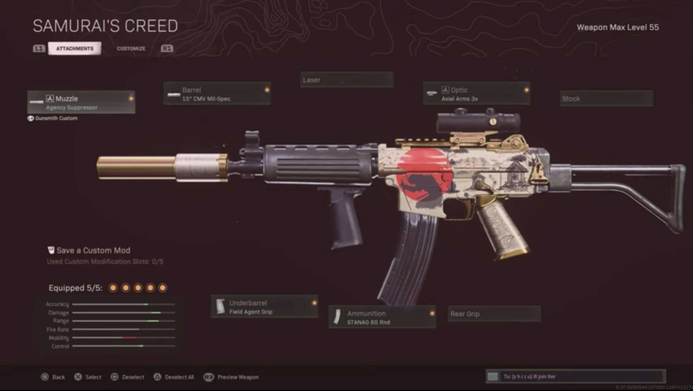

Recommended
This Warzone Loadout is a BEAST
If you’re looking to use one of the most improved Assault Rifles in the popular Call of Duty battle royale, here’s the best Krig 6 loadout for use in Warzone Season 4.
Best Warzone Krig 6 loadout attachments
- Barrel: 15″ CMV Mil-Spec
- Optic: Axial Arms 3x
- Muzzle: Agency Suppressor
- Underbarrel: Field Agent Grip
- Ammunition: Salvo 60 Rnd Fast Mag